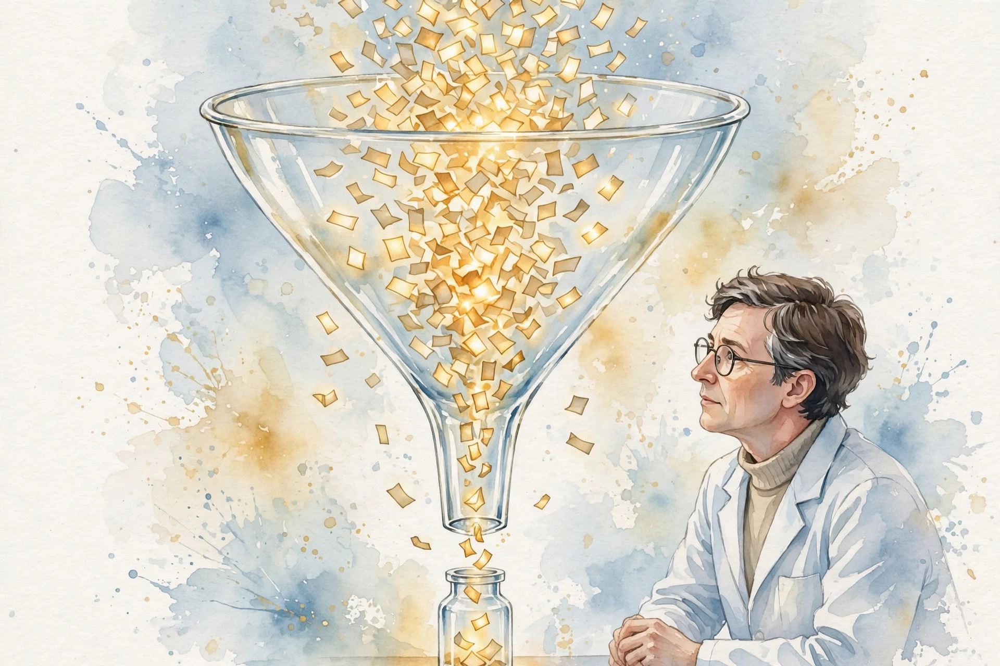

Companion · narrated from the lesson document
Where AI meets shipped code and wet labs: verification math, dataset moats, and the funnel where triage decides the bill.
From the lesson The idea, and every number beside it, comes from the cited concept of the lesson page. The phrasing belongs to the companion.
Illustration Invented by the companion: an analogy, a toy with made-up values, or a what-if. Never lecture content.
companion Companion voice: the idea above the tag is from the lesson. The generalization below it belongs to the companion.
Provenance: no full lecture transcript exists for this session. This page narrates the lesson document u05_coding_lifescience_economics.html, not a video. Every concept carries claim class OFFICIAL-SCHEDULE with status PLANNED / SOURCE ATTRIBUTION PENDING: planned topics mapped to the week, not inspected lecture records. All numbers are the computed toys of the lesson itself, verified against the lesson file. No official source video is named, so no video appears. Illustrations are original watercolors made for this companion. No historical photographs are included.
Section 1 · C01
From the lessonC01 §2
1,000 lines of code. Vibe defects: 40 per 100 lines. Verified defects: 4 per 100. Each defect costs 25 dollars in the tail. Review costs 3,000.
From the lessonC01 §6
Vibe: 10 times 40 times 25, or 10,000 dollars. Verified: 3,000 plus 10 times 4 times 25, or 4,000. Verification wins by 6,000. The crossover review cost is 9,000: any review cheaper than 9,000 pays. For a throwaway demo nobody uses, vibe wins: verification is pure cost.
Illustration Interactive toy. It runs the lesson rule on your inputs.
Vibe versus verified toy. Enter lines of code, defect rates per 100 lines, cost per defect, and review cost.
Lines vibe defects verified defects cost per defect review
Verification is a purchase with a price. Reviewing 1,000 lines costs 3,000 and cuts the defect tail from 10,000 to 1,000. Any review cheaper than 9,000 pays. The decision is arithmetic, not ideology.
Section 2 · C02
From the lessonC02 §5
A support classifier. Labels: 100,000 at 0.50 dollars, or 50,000. Training compute: 200,000. Total build asset 250,000. A competitor needs the same 250,000 plus the recipe knowledge to match it.
The dataset is 20 percent of the build cost but 90 percent of the moat, because compute is rentable and the labeled tickets are not.
From the lessonC02 §6 Direct quote from the lesson page.
From the lessonC02 §6
The moat is the dataset when data is proprietary, and the training bill when data is public. Compute is rentable. The labeled tickets are not.
| Line | $ | Share of build |
|---|---|---|
| Dataset: 100,000 labels x 0.50 | 50,000 | 20 percent |
| Training compute | 200,000 | 80 percent |
| Total | 250,000 | 100 percent |
Section 3 · C03
From the lessonC03 §5
Price 10 dollars per user. Light cohort, 80 percent: usage cost 0.50, margin 9.50. Medium, 15 percent: usage 5.00, margin 5.00. Power, 5 percent: usage 25.00, margin minus 15.00. Blended margin: 0.8 times 9.5 plus 0.15 times 5 minus 0.05 times 15, or 7.60 dollars per user.
From the lessonC03 §6
100,000 users: monthly profit 760,000. If power users double their usage to 50: blended margin falls to 6.35, profit to 635,000. The lesson reports that a usage-based price, 10 base plus tokens, keeps the power cohort at margin 5 and raises profit by 500,000.
Price the power cohort. The blend looks fine at 7.60 dollars per user while 5 percent of users lose 15 dollars each. When power users double their usage, profit falls 125,000 per month.
Section 4 · C04
From the lessonC04 §5
License 500 dollars once. Service 20 dollars per month with 3 dollars inference cost, over 36 months. Service margin is 36 times 17, or 612, above the 500 license. The service wins if the customer stays past month 30.
From the lessonC04 §6
With 3 percent monthly churn, retained months over 3 years sum to 22.2. Service margin is 377, below the 500 license. Churn flips the decision. If inference cost rises to 8 per month, service margin is 432 and the license wins again. The boundary decision is really a usage forecast.
| Case | License $ | Service margin $ | Winner |
|---|---|---|---|
| No churn | 500 | 612 | Service |
| 3 percent monthly churn | 500 | 377 | License |
| Heavy users, inference 8 | 500 | 432 | License |
Section 5 · C05
From the lessonC05 §5
Design takes 2 weeks, wet lab 4 weeks. AI cuts design 7x. New design time: 2 divided by 7 plus 4, or 4.29 weeks. Speedup: 6 divided by 4.29, or 1.40x. The 7x design speedup becomes 1.4x end to end. To double the cycle, the wet lab must also move.
From the lessonC05 §6
Ten design-make-test cycles per program. Before: 60 weeks. After: 42.9 weeks, saving 17.1 weeks. At 50,000 per week of program cost, saving is 855,000. But if AI designs are worse and need 30 percent more cycles: 13 times 4.29 is 55.8 weeks, saving only 4.2 weeks. Quality gates the speedup.
| Case | Weeks per program | Saving |
|---|---|---|
| Before AI | 60.0 | --- |
| AI design, same cycles | 42.9 | 17.1 weeks, 855,000 dollars |
| AI design, 30 percent more cycles | 55.8 | 4.2 weeks |
Amdahl eats the demo. A 7x design speedup becomes 1.4x end to end because the wet lab still takes 4 weeks. Ten cycles save 17.1 weeks, worth 855,000 dollars, unless worse designs add 30 percent more cycles.
Section 6 · C06
From the lessonC06 §5
The discovery funnel: 10,000 candidates at 0.10, 200 assays at 5,000, 5 clinical stages at 2M, 1 approval at 100M. Total 111,001,000 dollars. AI cuts candidate cost to 0.01 and raises candidates to 100,000: top cost stays 1,000.
From the lessonC06 §6
If better designs double assay survival, 400 reach assays: assay cost 2M, total rises to 112M. The savings cost an extra million. If AI improves triage so only 100 reach assays: assay cost 500,000, total 110.5M, saving 500,000 against 111M. The value of AI discovery is triage quality, not candidate quantity.

Section 7 · C07
From the lessonC07 §5
Breach probability 0.01 per year, loss 50M: expected loss 500,000 per year. Protection costs 200,000. Net 300,000 in favor of protection.
From the lessonC07 §6
If the probability is really 0.001: expected loss 50,000, below the 200,000 control. Skip the clean room and use contractual no-train terms at 20,000 per year. Patient-derived data: loss 200M, probability 0.005. Expected 1M per year. Protection at 300,000 is an easy buy.
| Case | Expected loss $/yr | Control $/yr | Decision |
|---|---|---|---|
| p 0.01, loss 50M | 500,000 | 200,000 | Protect |
| p 0.001, loss 50M | 50,000 | 200,000 | Accept risk, contractual terms |
| Patient data, p 0.005, loss 200M | 1,000,000 | 300,000 | Protect |
Never let a 300k decision ride on a guessed p. At p = 0.01 the protection pays 300,000 a year. At p = 0.001 it loses. The probability is the whole decision, and it is usually a guess.
Section 8 · C08
From the lessonC08 §5
200 proposals at 5,000 dollars per assay: the bill is 1M per month. Budget 400,000: feasible proposals are 80. The AI that proposes 200 wastes 120 proposals of compute and delays the good ones in the queue.
From the lessonC08 §6
Cheaper assay at 1,000 dollars: feasible proposals are 400 at the same budget. Now the AI may propose freely, and the bottleneck moves back to design quality. Assay innovation and AI throughput are complements: each raises the value of the other.
| Assay cost $ | Budget $ | Feasible proposals |
|---|---|---|
| 5,000 | 400,000 | 80 |
| 1,000 | 400,000 | 400 |
Section 9 · C09
From the lessonC09 §5
Expert review: 500 hours at 300 dollars per hour is 150,000 per release. Two experts give 320 hours per month. Releases per month are at most 320 divided by 500, or 0.64. The program ships at most 7 releases per year no matter how fast the AI trains.
From the lessonC09 §6
Expert pre-review triage cuts review to 150 hours: bill 45,000, throughput 2.1 releases per month. The best use of AI is as a force multiplier for expert hours, not a replacement of experts.
| Review model | Hours per release | Bill $ | Releases per month |
|---|---|---|---|
| Full expert review | 500 | 150,000 | 0.64 |
| AI triage plus expert check | 150 | 45,000 | 2.1 |
Experts are the bottleneck. Two experts give 320 hours a month. At 500 hours per release the program ships 7 releases a year no matter how fast the AI runs. AI triage cuts review to 150 hours and throughput triples.
Section 10 · C10
From the lessonC10 §5
Value 1M per year at full adoption. Ramp 0.10, 0.35, 0.70: realized 100k, 350k, 700k, total 1.15M over 3 years against the naive 3M. The naive case overstates value by 2.6x. Discounted at 10 percent: PV 906.1k.
From the lessonC10 §6
An onboarding program costs 200,000 and lifts the ramp to 0.20, 0.55, 0.85: realized 1.6M, PV 1.275M, net 1.075M. The onboarding pays 5x. Adoption investment beats model investment when the ramp is the binding constraint.
Section 11 · C11
From the lessonC11 §5
Escalation rate 0.05, escalation cost 150 dollars: 7.50 per task. Compute is 2.00. Total 9.50. A 2-dollar AI task is really 9.50. If the model improves and the rate falls to 0.02: 3.00 plus 2.00 is 5.00. Each point of escalation rate is worth 1.50 per task.
From the lessonC11 §6
50,000 recommendations per year. Escalation bill: 50,000 times 7.50, or 375,000. A model upgrade costs 500,000 once and cuts the rate to 0.02: new bill 150,000, saving 225,000 per year, payback 2.2 years. The upgrade is really an escalation-reduction purchase.
Illustration Interactive toy. It runs the lesson rule on your inputs.
Escalation toy. Enter tasks, escalation rate in percent, escalation cost, and compute cost per task.
Tasks rate pct escalation $ compute $
Section 12 · C12
From the lessonC12 §5
Out-of-distribution share 0.30, in-distribution accuracy 0.95, OOD accuracy 0.55. True accuracy: 0.7 times 0.95 plus 0.3 times 0.55, or 0.83. A good candidate is worth 50,000, an assay costs 5,000. Expected net: 0.83 times 50,000 minus 5,000, or 36,500 per proposal.
From the lessonC12 §6
At OOD share 0.70: true accuracy 0.67, net 28,500. The naive 0.95 case gives 42,500. The lesson reports it overstates value by 33 percent. 200 proposals per month at OOD 0.30: expected value 7.3M per month against 1M assay cost. The program is strongly positive even with OOD risk, but the budget must survive the months when OOD proposals cluster.
| OOD share | True accuracy | Expected net $/proposal |
|---|---|---|
| 0.00 | 0.950 | 42,500 |
| 0.30 | 0.830 | 36,500 |
| 0.70 | 0.670 | 28,500 |
| 1.00 | 0.550 | 22,500 |
Discount every accuracy by the out-of-distribution share. The model scores 0.95 in-distribution but the true accuracy is 0.83 at 30 percent OOD. The lesson reports the naive business case overstates value by 33 percent.
Wisdom index